#965: [GU] Patch 11/19-11/20 Total antigen tests (specimens), Total PCR tests (specimens), Negative PCR tests (people)
Issue number 965
hmhoffman opened this issue on November 21, 2020, 1:11 PM PST
State: Guam
Dates affected: 11/19-11/20
Describe the issue: On 11/21 we switched our sources for Guam's Total antigen tests (specimens), Total PCR tests (specimens), Negative PCR tests (people) to account for their new reporting schedule and new information gained by outreach.
Comments
#964: [GU] Remove Total PCR tests (people)
Issue number 964
hmhoffman opened this issue on November 21, 2020, 12:50 PM PST
State: GU
Dates affected: 5/13 - 11/20
Describe the issue: Prior to 11/20, we had been capturing Guam's Total PCR tests (people) as {Positive PCR tests (people) + Negative PCR tests (people)}. However due to new information discovered through outreach, we learned that the negative test value we had been using was actually Negative PCR tests (specimens). In order to ensure our data is as accurate as possible, we are removing Guam's Total PCR tests (people) from our time series.
Comments
An extra people entry snuck in, modified the source note Changes.txt
#928: [GU] Patch 11/4 Timestamp
Issue number 928
hmhoffman opened this issue on November 5, 2020, 6:11 AM PST
State: GU
Dates affected: 11/4
Describe the issue: On 11/4, there was a typo in the GU timestamp and it was entered as 10/4 instead of 11/4. We should patch that mistake.
Comments
BEFORE: 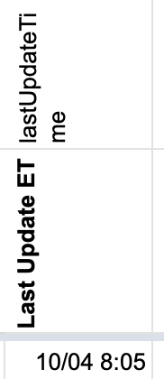
AFTER: 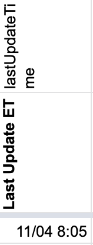
#888: [GU] Total pcr tests (people) entered incorrectly on 10/6
Issue number 888
hmhoffman opened this issue on October 7, 2020, 12:56 PM PDT
Labels Data quality
State: GU
Dates affected: 10/6
Describe the issue: On 10/6, pos. cases (pcr) was entered incorrectly in the total tests (pcr) calculation. We should patch this from the 10/6 JIC release where we source our data.
Links: https://ghs.guam.gov/jic-release-no-379-cumulative-results-65-test-positive-covid-19-profiles-confirmed-cases-one-gdoe
Comments
BEFORE: 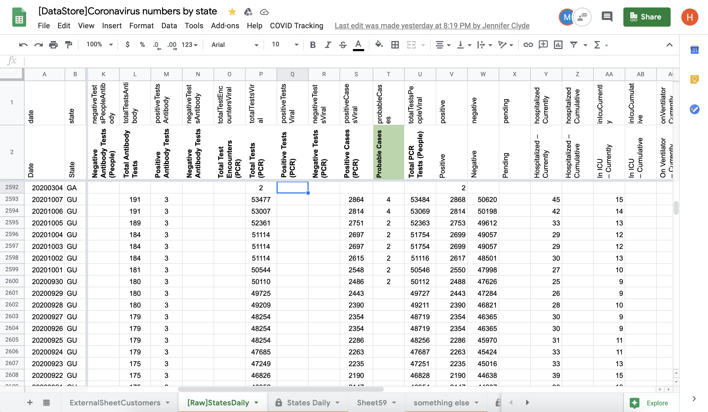
AFTER: 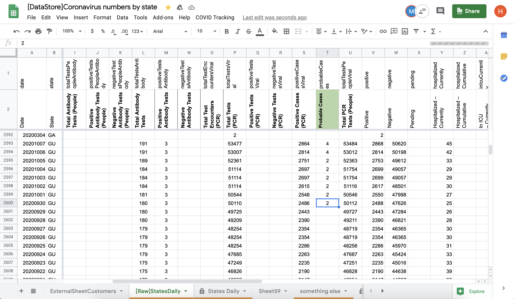
#882: [GU] Guam added reporting of total and positive antigen tests to situ report
Issue number 882
muamichali opened this issue on October 2, 2020, 8:46 AM PDT
Labels Data quality
State or US: Guam
Describe the problem On 10/1 Guam started reporting positive and total antigen tests on their situation report.
Link to data source https://drive.google.com/file/d/1n-vrUGzEzs7rjcxXBFEbIMmeUQykuyO9/view
Comments
Added values from 10/1 PDF linked in issue is 10/2. We used 10/1 which we had archived: Guam COVID-19 Surveillance Sit Rep.pdf
After 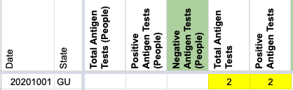
#832: [GU] Back-fill Probable Cases and Positive Cases (PCR) from screenshots
Issue number 832
muamichali opened this issue on September 15, 2020, 7:18 AM PDT
Labels Data quality
State or US: Guam
Describe the problem Guam started to separate reporting of probable and confirmed cases on 4/19. CTP capture of Positive Cases (PCR) started on 4/29. CTP capture of Probable cases started on 7/28.
Action Plan
- [ ] Backfill Positive Cases PCR from 4/19 - 4/28 using screenshots
- [ ] Backfill probable cases from 4/19 - 7/28 using
{ Positive - Positive Cases PCR}(spot check screenshots) - [ ] Slightly amend total cases on 4/23, 4/24, 4/27 and 4/28 based on screenshots
Link to data source Guam Screenshots on CovidTracking.com
Comments
Before and After data is in the attached spreadsheet Guam Probable Timeseries Backfill.xlsx
#808: [GU] Removing negative serology/antibody calculation
Issue number 808
jaclyde opened this issue on September 2, 2020, 9:54 PM PDT
Labels Data quality Historical Data
State or Territory: Guam
Describe the problem: CTP started calculating negative serology tests on 6/3/2020 based on GU's Total antibody tests - Positive antibody tests. We are removing this metric.
Comments
BEFORE: 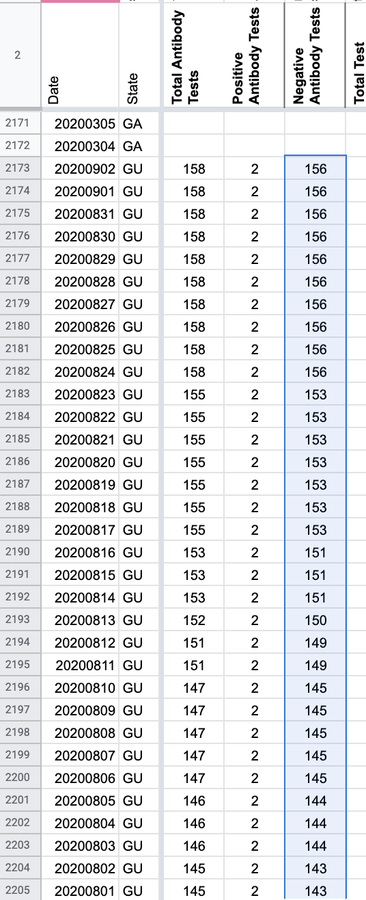
AFTER: 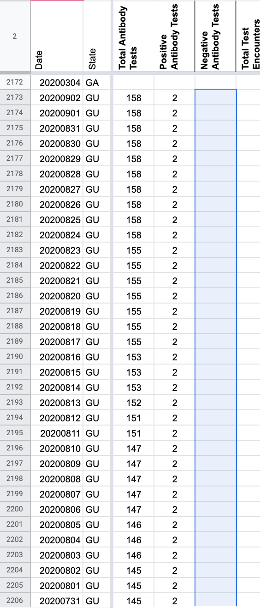
Values Removed:156 156 156 156 156 156 156 156 156 156 153 153 153 153 153 153 153 151 151 151 150 149 149 145 145 145 145 145 144 144 144 143 143 143 143 143 143 143 143 143 143 143 143 143 143 143 143 143 143 140 140 140 140 140 140 140 140 140 140 126 126 126 126 126 126 126 123 123 123 120 120 120 120 114 114 112 112 111 111 111 108 108 108 107 107 107 107 103 103 103 92 91
#775: [GU] On 8/11 Total Tests (PCR) was not recorded in the spreadsheet
Issue number 775
jaclyde opened this issue on August 18, 2020, 10:12 PM PDT
Labels Data quality Missing Data
State: GU
Describe the problem: For some reason the value entered on 8/11 for Total Tests (PCR) was not recorded in the spreadsheet but was captured in the edit history as well as the slack thread for GU 8/11.
Link to data source:

Comments
BEFORE 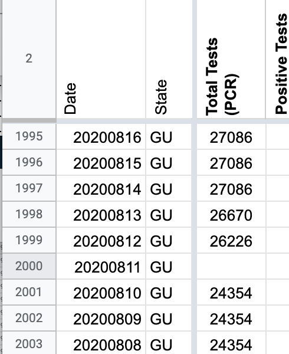 AFTER 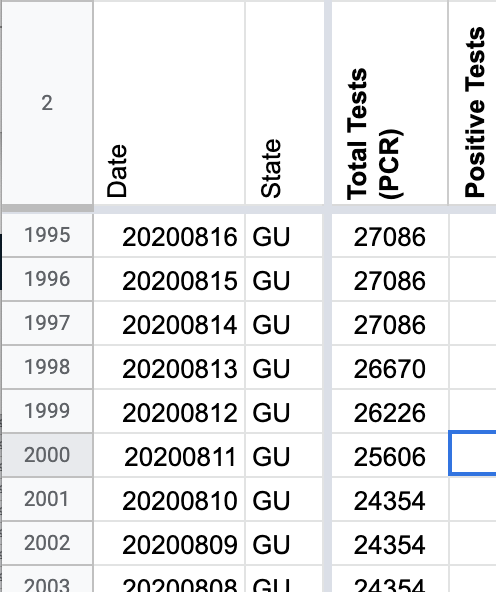
#751: [GU] Unclear Units for Total Tests (PCR), Positive Tests (PCR) and Negative Tests (PCR)
Issue number 751
jesseandersonumd opened this issue on August 12, 2020, 7:20 AM PDT
Labels Backfill Historical Data not stale
State/Territory: GU
Dates impacted: 5/19-8/11 and 5/25-5/26
Issues: On 7/1, we stopped reporting positive tests (PCR) and negative tests (PCR) because were unsure about the units that they were reported in (we suspected they were reported in people as opposed to specimens). A Guam annotation says Total Tests (PCR) is in specimens, but positive tests (PCR) and negative tests (PCR) summed to Total Tests (PCR). We are not sure about the units of Total Tests (PCR) because positive tests (PCR) and negative tests (PCR) are both unclear unit-wise.
Currently, we are summing Positive Cases (PCR) and negative (people or cases) in order to get Total PCR Tests (People). The Total PCR Tests (People) value is consistently equal or roughly the same as the value in Total Tests (PCR), even though Total Tests (PCR) is supposedly in specimens and Total PCR Tests (People) is in people.
We need to outreach to confirm whether Total Tests (PCR) is in people or in specimens as well as whether positive tests (PCR) and negative tests (PCR) are in people or specimens.
Source: https://www.ghs.guam.gov/jic-release-no-210-updated-reporting-procedures-results-end-day-results-four-test-positive-covid-19
Comments
This issue has been automatically marked as stale because it has not had recent activity. It will be closed if no further activity occurs. Thank you for your contributions!
This issue is moot. See https://github.com/COVID19Tracking/issues/issues/964
#747: [GU] Backfill current icu values 8/6-8/8
Issue number 747
hmhoffman opened this issue on August 10, 2020, 12:59 PM PDT
State: GU Dates impacted: 8/6-8/8 Issue described: On 8/10, we discovered a new source for current icu figures. GU has began posting daily "Guam COVID-19 Case Update", which include current icu numbers. We should patch current icu for 8/6, 8/7, and 8/8 using the case updates from that day. Sources: https://www.facebook.com/GHSOCD/?tn-str=k*F
Comments
This issue has been automatically marked as stale because it has not had recent activity. It will be closed if no further activity occurs. Thank you for your contributions!
This issue has been closed because it was stale for 15 days, and there was no further activity on it for 10 days. You can feel free to re-open it if the issue is important, and label it as "not stale."
Before: 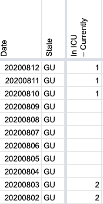
After: 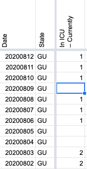
#725: [GU] Patch Total PCR Tests (People) for 8/1
Issue number 725
ladyzhetse opened this issue on August 3, 2020, 6:50 AM PDT
Labels Data quality not stale
State or US: Guam
Describe the problem During pub shift on 8/2, we realized that the "Total PCR Tests (People)" figure had been incorrectly calculated the previous day, 8/1. It should be 22,044 (359+21685), not 22,052 (367+21685).
Link to data source 359 = PCR confirmed cases (356 from dashboard + 3 from 8/1 press release); 21685 = negative cases (from press release) https://ghs.guam.gov/jic-release-no-245-cumulative-results-three-test-positive-covid-19-dphss-tests-doc-employees-new https://covid-tracking.slack.com/archives/CUQ4MMTPD/p1596401618039500
Comments
Fixing according to the JIC release number 245 linked above BEFORE: 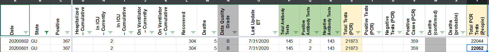 AFTER: 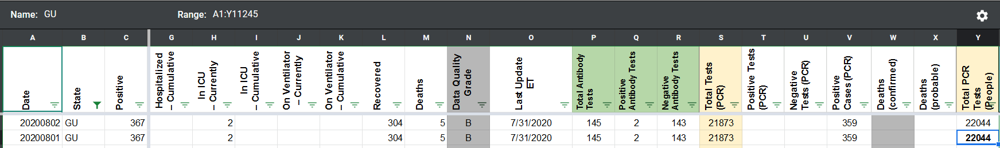
#684: [GU] PCL Historicals
Issue number 684
jesseandersonumd opened this issue on July 28, 2020, 6:54 AM PDT
Labels Backfill Historical Data
State: GU
Current issue: gaps in data reporting on 6/4 and 6/3 for positive cases (PCR). Additionally, we only started reporting positive cases (PCR) on 4/28.
Sources: 6/4 data: https://ghs.guam.gov/jic-release-no-161-end-day-results-zero-test-positive-covid-19-dphss-one-confirmed-positive-gmha 6/3 data: https://ghs.guam.gov/jic-release-no-159-end-day-results-one-tests-positive-covid-19-dphss
Link to source for time series: https://ghs.guam.gov/coronavirus-covid-19?page=1
Comments
BEFORE (6/4 and 6/3 gaps): 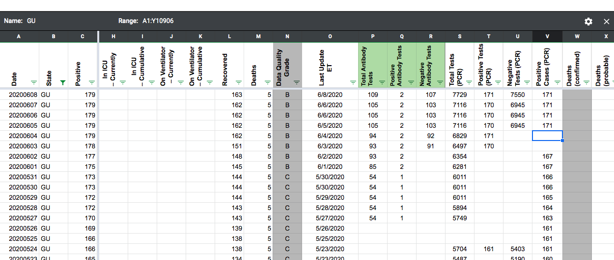
AFTER (6/4 and 6/3 gaps):
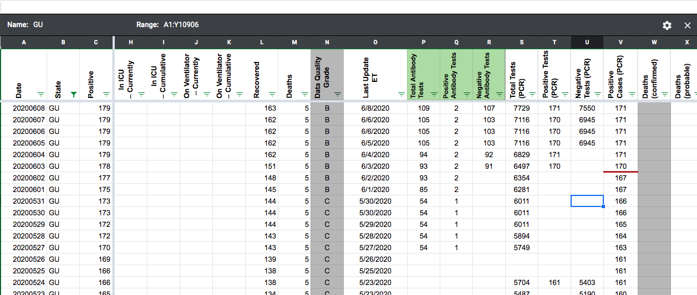
#543: [GU] PCL Historicals and WS2
Issue number 543
pscsharon opened this issue on June 26, 2020, 6:33 AM PDT
Labels PCL/SVP Historicals
Death values are historically recorded in both the "Deaths" and "Deaths (Confirmed)" columns for GU. However, GU’s death values are unclear about what they represent, so they should only be recorded in the main "Deaths" field.
Comments
Updated tooltip to "no data" and added process note.
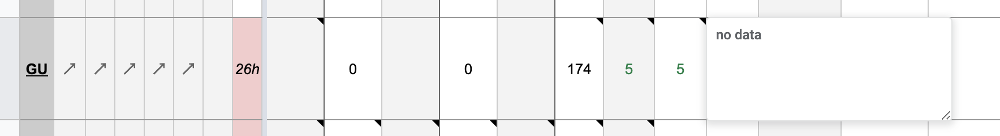Before 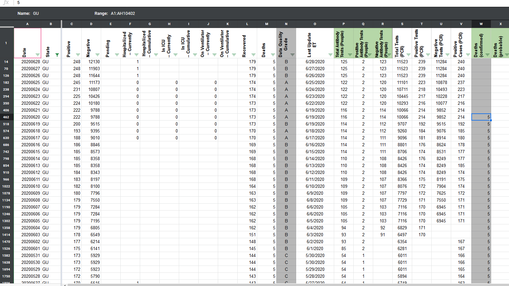
AFTER 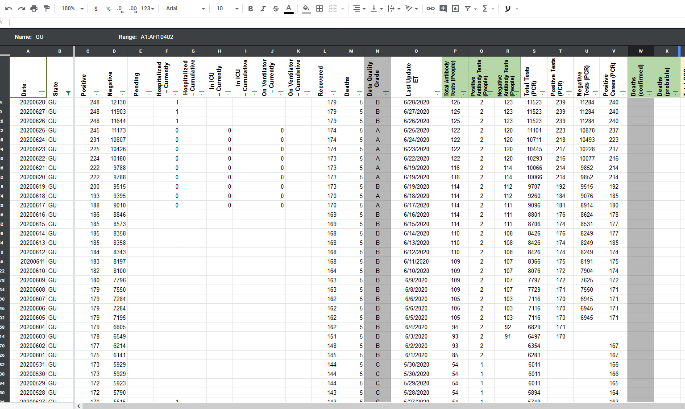
#287: [States Daily CSV] GU positiveIncrease is negative for 2020-03-07
Issue number 287
acobolew opened this issue on April 24, 2020, 9:12 PM PDT
Guam has positiveIncrease < 0 on 2020-04-20
library(data.table) covidtracking.dt <- fread('https://covidtracking.com/api/v1/states/daily.csv') covidtracking.dt[, date := as.Date(as.character(date), '%Y%m%d')] covidtracking.dt[order(date, decreasing=FALSE)][ , .(date, state, positive, positiveIncrease) ][positiveIncrease < 0] date state positive positiveIncrease 1: 2020-03-07 RI 2 -1 2: 2020-04-20 GU 133 -3 3: 2020-04-22 HI 582 -2 4: 2020-04-22 PR 915 -383
Comments
Hi @acobolew It turned that the 136 numbers included 3 probable cases, we revised the historical data to exclude them https://covidtracking.com/screenshots/GU/GU-20200420-180557.png
Before

After 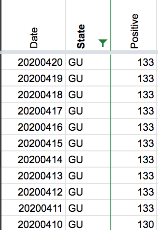
BEFORE: 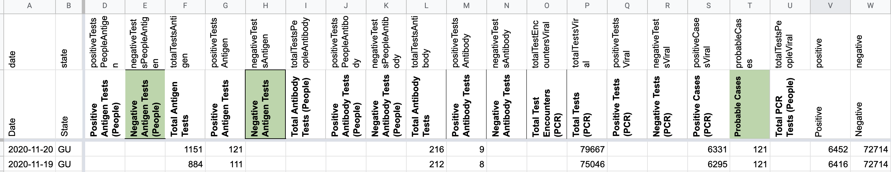
AFTER: 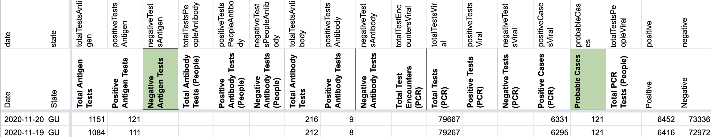